DED Machine Air Pressure Monitoring
Used pressure sensors and MATLAB to study how three metal printing machines interact through shared argon and compressed-air supplies.
Introduction
Directed Energy Deposition (DED) adds metal by feeding material into a melt pool created by a focused energy source. Argon shields the process from the surrounding atmosphere. At the Artificial Intelligence in Manufacturing Pilot Facility (AIMPF), multiple machines draw on shared utility supplies, so a change in demand at one machine can appear in pressure readings elsewhere in the facility.
This study examined the RPM Innovations 222XR (RPMI), Optomec LENS 860 3D, and Mazak VC-500AM. Heat-treatment equipment also needs a stable argon supply, while RPMI purges with argon when activated. The goal was to identify pressure patterns that could inform machine scheduling and future monitoring, rather than estimate gas consumption from pressure alone.

Methodology
I worked with timestamped sensor-history CSV files for the three DED machines and a separate compressed-air general line. In MATLAB, I parsed the timestamps, filtered each series into calendar weeks, and plotted pressure in PSI on polar charts. Each revolution represents Sunday through Saturday, making changes at different times of the week easier to compare.
The machine plots overlay RPMI, Optomec, and Mazak. A separate four-week overlay compares the compressed-air general line from November 10 through December 7, 2024. The supplied weekly argon plots span November 10, 2024 through January 18, 2025.
Angle marks time within the week; distance from the center marks pressure. A line near the center can indicate a zero reading or an inactive machine, while breaks and abrupt changes need the operating context to interpret.
Argon Pressure
Several weekly plots show an RPMI pressure rise at approximately the same time as an Optomec pressure drop. That pattern is consistent with the machines interacting through a shared supply, but the pressure traces alone do not establish a direct causal link or quantify either machine's gas use. The chart for December 22–28, 2024 is comparatively steady, matching the reduced activity noted during the holiday week.
Mazak behaves differently: its pressure reading is generally zero while it is inactive and appears during operation. This is why an absent Mazak line in a particular weekly chart should not be read as a missing sensor series or as evidence of a constant pressure.
View all weekly argon plots →Compressed-Air General Line
The general compressed-air line serves more machines than the argon line. Its four overlaid weeks show frequent swings within each day and no clear repeatable week-to-week pattern. Because demand comes from a broader set of equipment, a general-line pressure change cannot be assigned to one DED machine using these measurements alone.
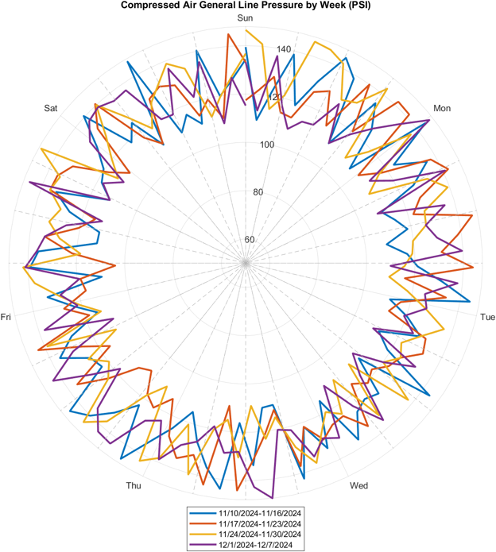
Findings and Next Steps
The pressure comparisons suggest that one machine's demand can affect another machine's supply conditions. That matters when a long heat-treatment run or another process needs stable argon pressure. The work provides a basis for considering those interactions when scheduling equipment.
The sensors recorded pressure only once every two hours, so short purge events and transient dips may be missed. Operator login and logout times in the Shared User Management System were also not always prompt enough to align events precisely with the pressure samples. More frequent readings, monitoring of additional machines, and better operating logs would make later comparisons more conclusive.
Weekly Argon Plots
Complete set of the ten supplied weekly machine-pressure charts. Select a plot to enlarge it.
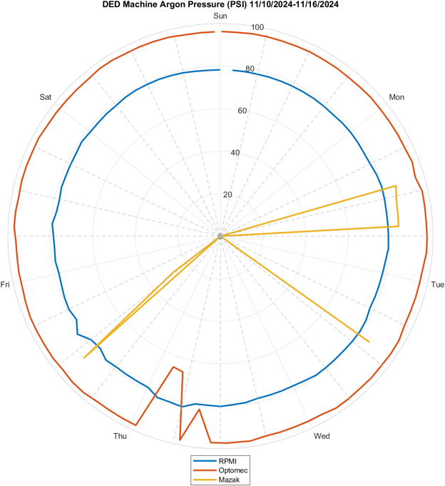
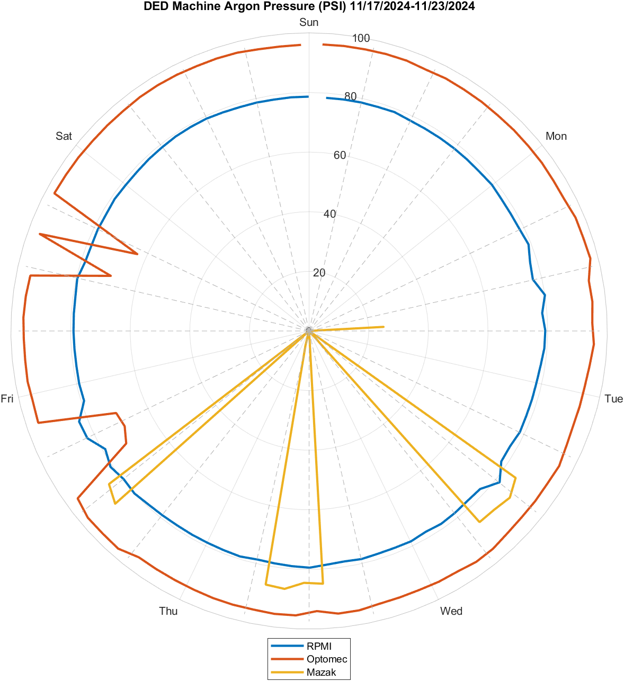
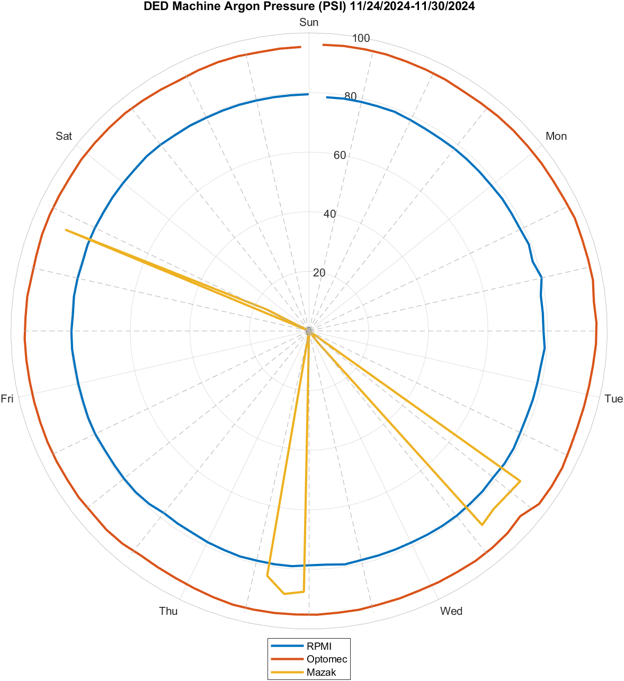
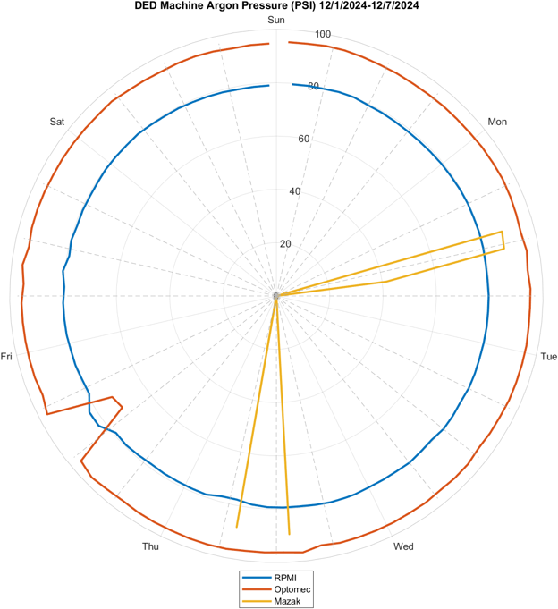
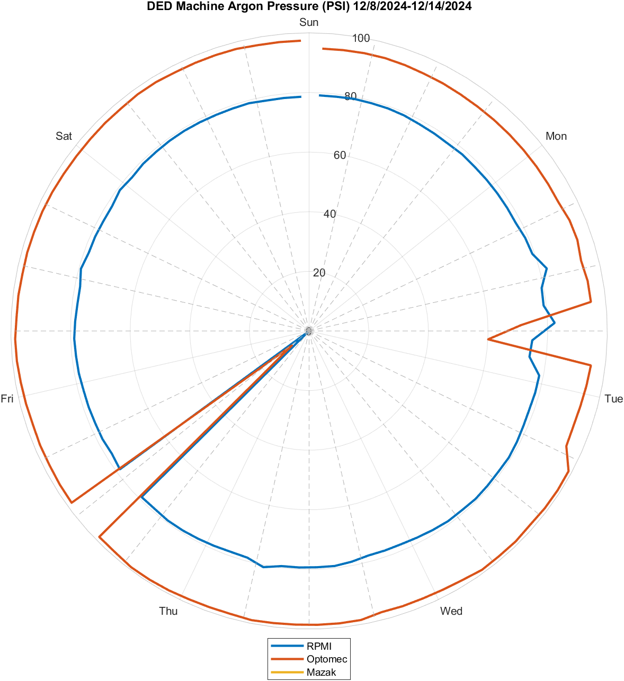
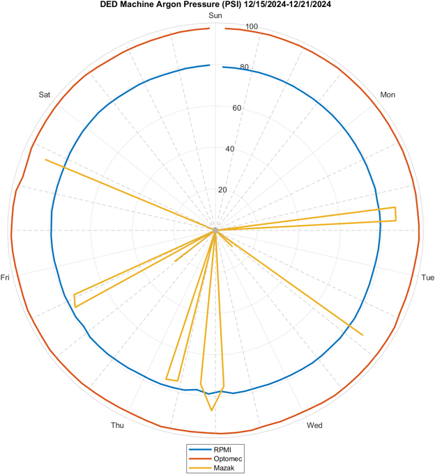
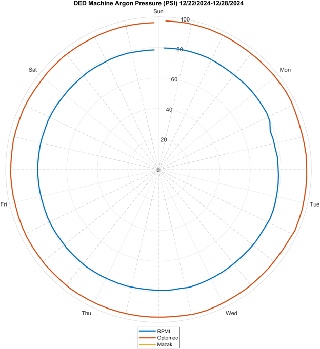
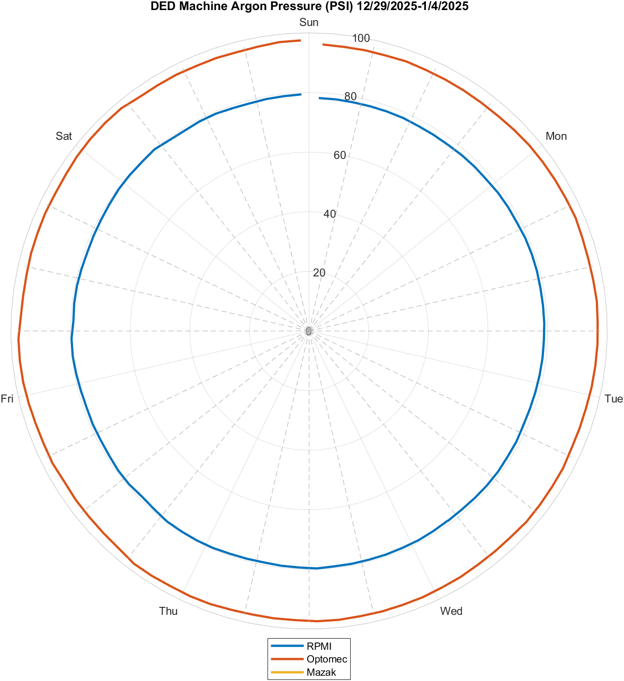
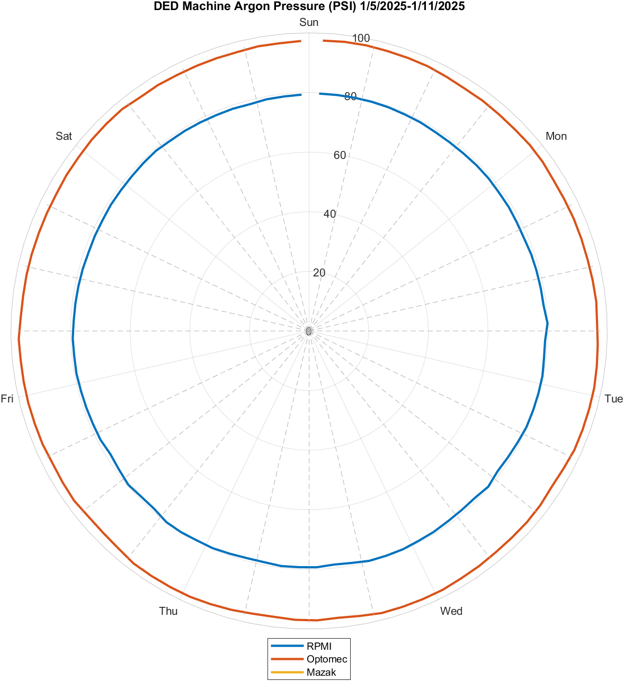
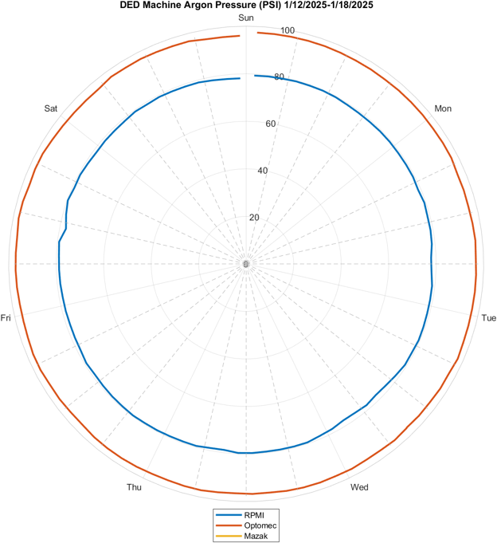
Research Poster
Presented with Khushi Shah, Dr. Zachary Brunson, and Dr. Aaron Stebner. The poster summarizes the equipment, pressure patterns, study limitations, and Georgia Tech's collaboration with Alegna Technologies.
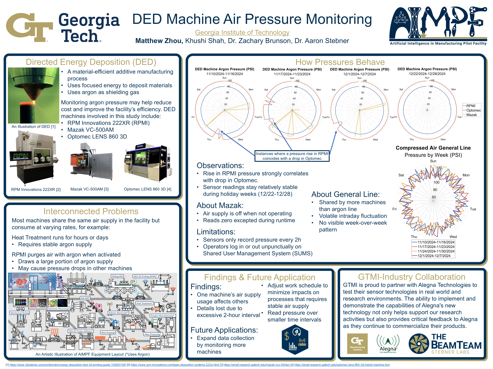